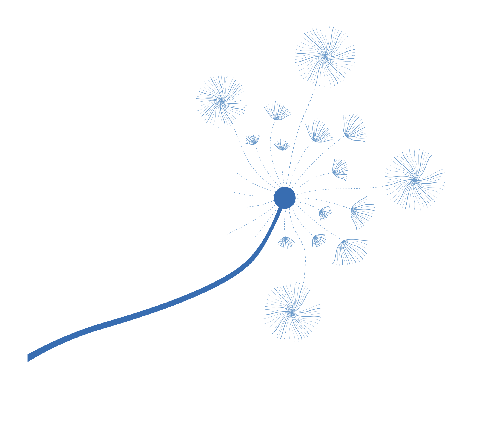
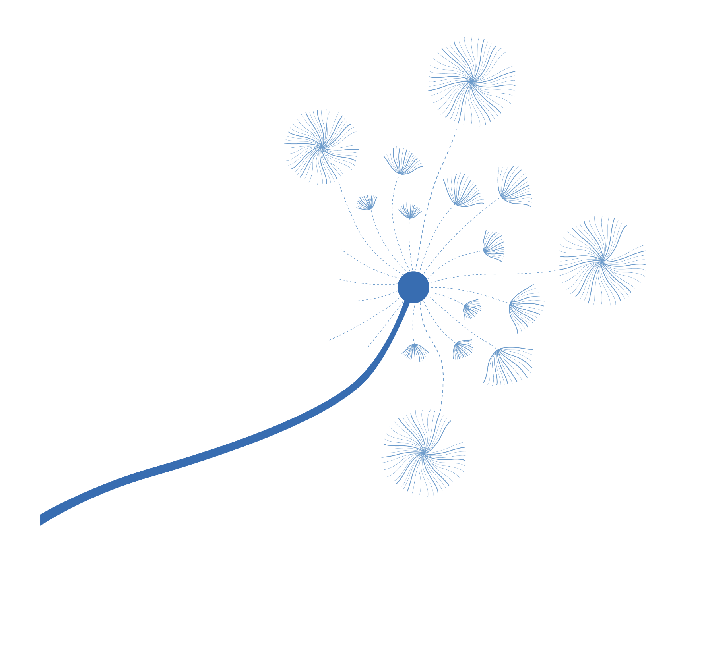
 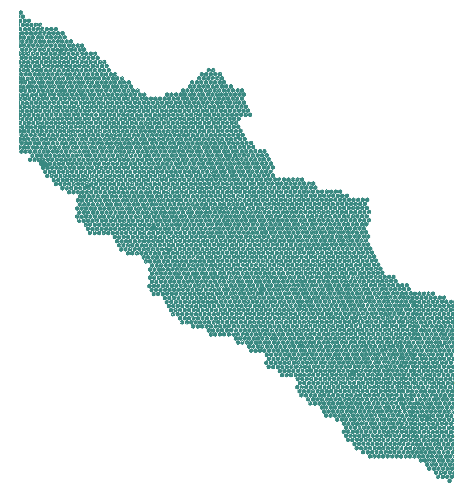
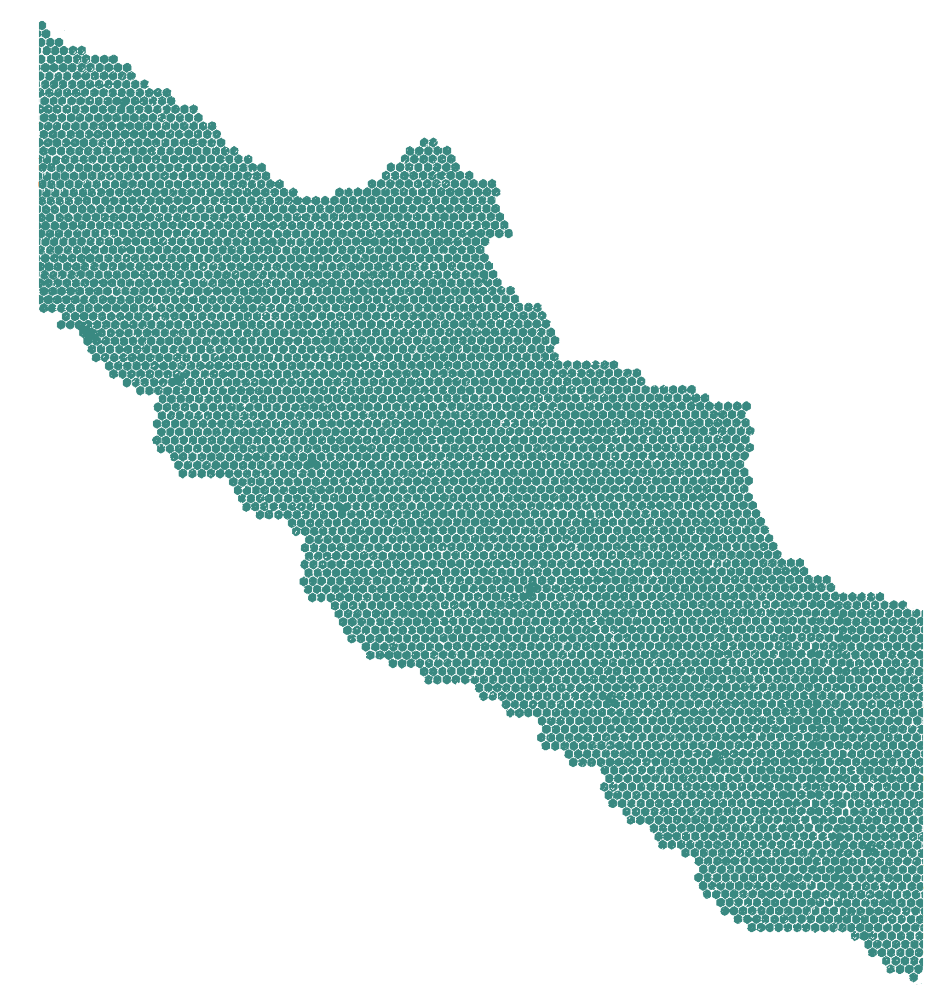
 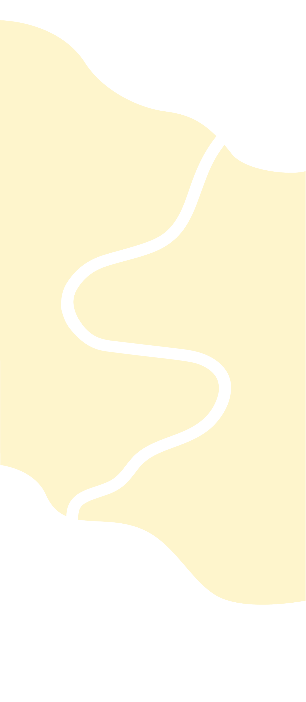
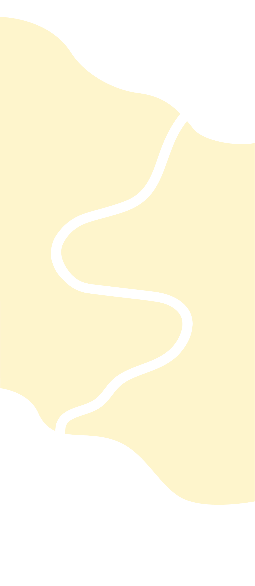


 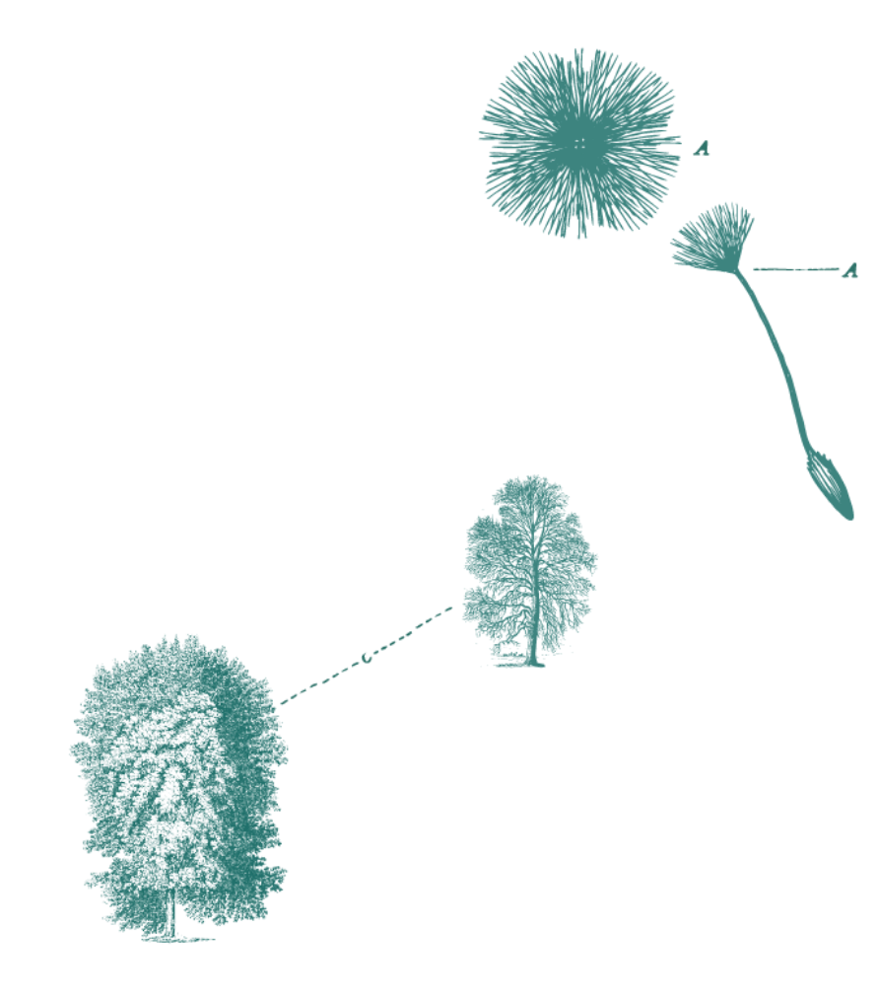
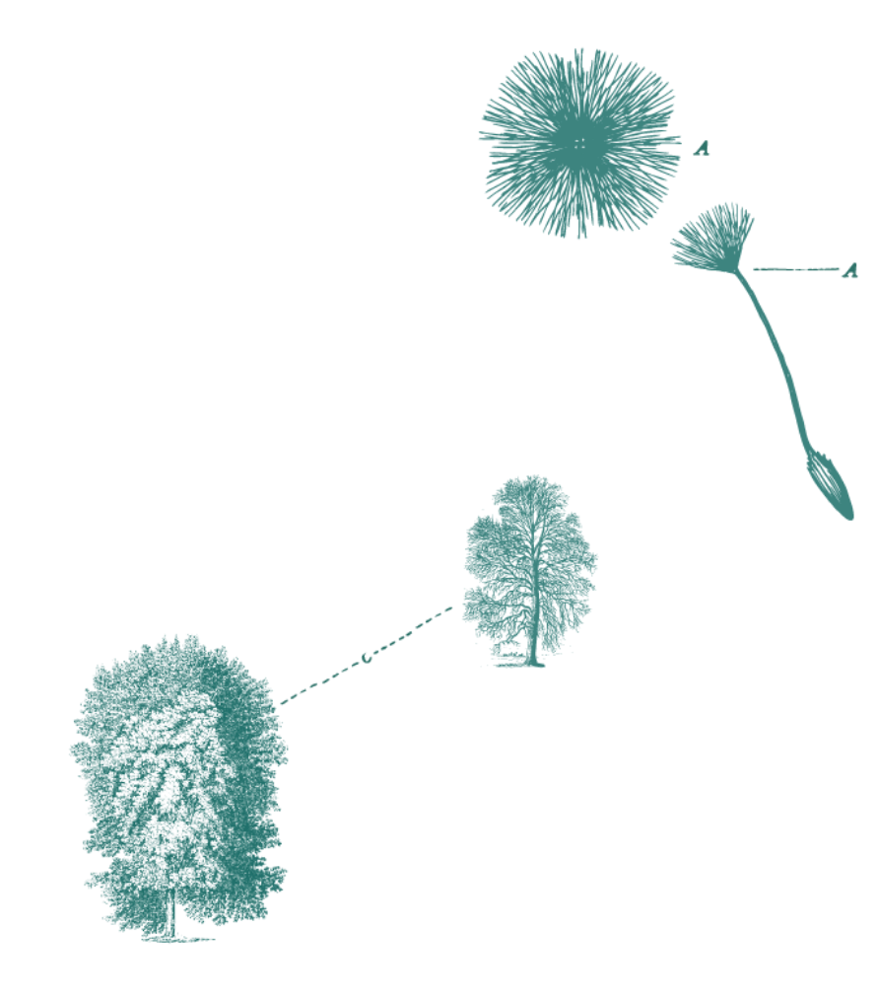

Here at 100Kin10, weve spent the last eight years
working to prepare 100,000 excellent STEM teachers.
Each year, we share our progress and learnings with the
entire 100Kin10 network of 300+ partner
organizations, teacher leaders and other experts in our
annual report, but this moment called for something
different.
This year, we are sharing stories of how people have
come together to make real change in their
communities, and the strategies that have made these
stories possible. Behind each story is a roadmap to how
systems operate, how networks cohere and nourish
trust, how people learn from each other, how teams
solve seemingly intractable problems, and how change
happens in an increasingly complex world.
working to prepare 100,000 excellent STEM teachers.
Each year, we share our progress and learnings with the
entire 100Kin10 network of 300+ partner
organizations, teacher leaders and other experts in our
annual report, but this moment called for something
different.
This year, we are sharing stories of how people have
come together to make real change in their
communities, and the strategies that have made these
stories possible. Behind each story is a roadmap to how
systems operate, how networks cohere and nourish
trust, how people learn from each other, how teams
solve seemingly intractable problems, and how change
happens in an increasingly complex world.
Weve spent years honing these strategies and use them every day. We are sharing what weve learned with you so that you can build off of it and we can inspire each other in the ongoing task of catalyzing change that matters. We hope you will combine, add and build upon these strategies and share your own. There is no 100Kin10 without you.
Thank you for all that you do on behalf of teachers, students, our country, and our planet.
Onward and upward,
Talia Milgrom-Elcott
Thank you for all that you do on behalf of teachers, students, our country, and our planet.
Onward and upward,
Talia Milgrom-Elcott
Introduction
While this is our annual report its really a cross between a collection of shorts and a how-to manual; a mix of narratives, numbers, and most of all, a practical, hands-on guide for making change. Each chapter shares a key strategy, methods of implementation, and stories of what these strategies look like in action, from the perspective of partners in the 100Kin10 network who are working on the challenges underlying the STEM teacher shortage.
Systems dont operate in a linear fashion, and neither do the solutions for systems change. These strategies dont work in isolation. They build on and reinforce each other to make lasting change possible. We encourage you to use all of these strategies in your own work. We hope youll use this field guide as a place for reflection, brainstorming, and ideation.
HOW TO USE
THIS FIELD GUIDE
THIS FIELD GUIDE
BUILD A COALITION:
FIELD GUIDE
FOR CATALYZING CHANGE
FOR CATALYZING CHANGE
Inspire Action with A Big Goal
One of the central challenges of catalyzing change that lasts is that even seemingly isolated or discrete efforts exist inside of systems that are vast and complex. How do you get traction on a problem thats so big its hard to grasp? You start at the end, with an audacious goal. The goal should be larger than any individual could ever reach on their own, yet something people can imagine accomplishing if they work together. That goal can become the inspiration that drives working together differently.
Weve learned from countless social movements that there is tremendous power in using a big goal to build a sense of shared purpose and unity. Here is our twist: Let the big goal inspire individual action, inviting diverse actors to bring their unique assets and resources to help reach the goal. The combination of big, shared purpose and individual agency has enabled us to bring together the kind of diverse coalition that real change requires. It inspires partners to believe that change is possible, helps them see themselves as part of that change, and motivates them to take the first step.
Introduction
Inspiring Action Through
Co-ownership and Commitments
Co-ownership and Commitments
50 new partners have joined our effort in 2019
300+ organizations, representing a total of 584 individuals contributing
Our network is
more than 10 times
the size it was when
we started
more than 10 times
the size it was when
we started
We ask partners to identify how they can contribute to reaching our big shared goal, helping partners see themselves as one small but integral piece of a broader coalition. In doing this, we are inspiring partners to become co-owners of and active partners in reaching the big goal our whole network is working toward.
In total, partners have made over 500 commitments to ending the STEM teacher shortage, and in 2019 alone, 138 partners have made new commitments or renewed commitments.
A few examples of the commitments partners
have made in 2019:
In total, partners have made over 500 commitments to ending the STEM teacher shortage, and in 2019 alone, 138 partners have made new commitments or renewed commitments.
A few examples of the commitments partners
have made in 2019:
WeTeach_CS at UT Austin will recruit and certify 150 educators in high school computer science and train 100 educators and administrators in strategies for broadening participation in computer science.
Colorado Education Initiative will support and train 200 educators in leadership practices to design, test, and scale change ideas in ways that promote school-wide redesign and inform district system conditions.
Chicago Public Schools will support at least 75 teachers in taking the elementary mathematics specialist coursework to expand their expertise in the teaching learning of early mathematics.
In 2012, the School of Education at Rider University created a new STEM-focused teacher residency program, and Dr. Sharon Sherman, former Dean, who supported the development of the program, says it all happened because of our participation with 100Kin10. The residency program enables college grads of all backgrounds to earn a K-6 teaching certificate through an innovative 9-month residency where participants work in schools while receiving direct mentorship and completing a series of math and science courses online once the residency ends. According to Sherman, It was the connections we made and the funding we accessed through the 100Kin10 network that inspired us to make that program happen.
The program was so successful that it led to a partnership with the US Satellite Laboratory and the creation of the Endeavor STEM Certificate Project, which enables teachers to earn a STEM teaching certificate by completing five online graduate courses, now available to teachers throughout the country. Sherman explained that it was the conversations she had at 100Kin10 events and the people she met that pushed her to create the program. But the impact goes beyond a single program, Sherman said that throughout her ten years as Dean, she was constantly invigorated by new ideas and inspired by connections with STEM thought leaders through her involvement in 100Kin10. As she put it, I wouldnt be the Dean that I was if it wasnt for 100Kin10.
The program was so successful that it led to a partnership with the US Satellite Laboratory and the creation of the Endeavor STEM Certificate Project, which enables teachers to earn a STEM teaching certificate by completing five online graduate courses, now available to teachers throughout the country. Sherman explained that it was the conversations she had at 100Kin10 events and the people she met that pushed her to create the program. But the impact goes beyond a single program, Sherman said that throughout her ten years as Dean, she was constantly invigorated by new ideas and inspired by connections with STEM thought leaders through her involvement in 100Kin10. As she put it, I wouldnt be the Dean that I was if it wasnt for 100Kin10.
It all happened because of 100Kin10
Our partners tell us that the 100Kin10 network inspired them personally and inspired their organizations work and commitments:
The Impact of Inspiration:
of partners say they feel inspired by participation in 100Kin10 to stay focused on their STEM teaching work
of partners have spent time outside of 100Kin10-organized opportunities doing work that is inspired by participation in the 100Kin10 network
of partners say
theyve been inspired to take action as a result of participating in 100Kin10 network
theyve been inspired to take action as a result of participating in 100Kin10 network
[This organization] is so unlike any other Ive been a part of! It makes me believe that together we truly can make a difference and make change - 100Kin10 gives me hope!
72%
84%
83%
We work hard to get national visibility and recognition for the urgency of solving the STEM teacher shortage and for the accomplishments of the network. In doing so, partners see that their work is valued and are reminded that their individual efforts are part of a broad coalition of partners working toward change for the entire field of STEM Education.
Executive Director Talia Milgrom-Elcott continued her column in Forbes, highlighting issues in STEM education, publishing a total of 22 articles in 2019, with 59,351 total views.
Generated over 17 Million impressions on Twitter
Increased Twitter followers
by 40 percent
6,400 total followers
Increased Twitter followers
by 40 percent
6,400 total followers
20 media pieces published in
2019 about 100Kin10
2019 about 100Kin10
UNDERSTAND, IDENTIFY AND
FIND FOCUS:
FIND FOCUS:
Find the Points of Highest Leverage
We spent years working closely with the entire network of partners and thousands of teachers and other experts, asking their perspectives on why it is so hard to get and keep great teachers, especially in STEM. Ultimately we identified more than 115 challenges in underlying the persistent STEM teacher shortage. Together, we call them our Grand Challenges.
Then, with the help of 750 teachers and other education leaders, we mapped the connections between them, generating over 35,000 data points that helped us trace the structure of the system. Finally, we partnered with complexity mapping scientists to help us run simulations on that data over 1,000 times, building a detailed picture of a deeply interconnected system.
Then, with the help of 750 teachers and other education leaders, we mapped the connections between them, generating over 35,000 data points that helped us trace the structure of the system. Finally, we partnered with complexity mapping scientists to help us run simulations on that data over 1,000 times, building a detailed picture of a deeply interconnected system.
With that map and an unprecedented understanding of the interdependent nature of the challenges in STEM education, weve been able to identify leverage points or Catalysts for change across the system. The Grand Challenges and Catalysts have resonated so deeply with 100Kin10 partners that 94% of partners in the network have now made them organizational priorities.
By helping partners understand the problem at the macro level, we have been able to work together to also identify the most effective ways to align their individual efforts. Regardless of their context or scale of work, an understanding of the big picture helps partners find ways to contribute the resources they have to our nationwide effort.
138
partners made 360 new
commitments aligned to the Grand Challenges in 2019
partners made 360 new
commitments aligned to the Grand Challenges in 2019
Creating a structure that provides insight into the complex ecosystem of STEM education is truly an innovation that will have long-lasting impact on our field. The vision and design of your efforts is truly elegant.
SUPPORT
PEOPLE TO WORK TOGETHER:
PEOPLE TO WORK TOGETHER:
Build Trust and Connections
Creating the conditions for a diverse group of people to work together requires fostering trust; without it, there can be no vulnerability, and without vulnerability, it is impossible to honestly share what we need to learn or cannot do on our own.
People need time and space to make connections and build the kinds of relationships that can drive long-term collaboration. Building trust often requires more work on the front end, but it pays off in the long run by enabling collaboration and cooperation to flow much more easily across a network. We have come to say the speed of a network is trust.
Building those relationships means not only bringing together partners working on similar efforts, but also convening unlikely allies who can connect across sectors and geographies to build on each others work and advance our collective goals.
People need time and space to make connections and build the kinds of relationships that can drive long-term collaboration. Building trust often requires more work on the front end, but it pays off in the long run by enabling collaboration and cooperation to flow much more easily across a network. We have come to say the speed of a network is trust.
Building those relationships means not only bringing together partners working on similar efforts, but also convening unlikely allies who can connect across sectors and geographies to build on each others work and advance our collective goals.
At 100Kin10, we have developed a set of tools to help build trust amongst partners through large gatherings, small-group convenings, and 1-on-1 opportunities.
Amanda J. Smith, M. Ed,
Executive Director, ENGINE of Central PA
STEM Outreach & Engagement Liaison, Penn State Center for Science and the Schools
Executive Director, ENGINE of Central PA
STEM Outreach & Engagement Liaison, Penn State Center for Science and the Schools
Finding Exactly Who Youre Looking For
A Brief History of a STEM Ecosystem in Pennsylvania
Connecting to New Ideas
Deep meaningful relationships that lay the groundwork for collaboration are built on trust. In 2019 trust reached an apex in the network, as did the number of connections built through our programming
Trust was at an all-time high:
One of the powerful tactics 100Kin10 employs is connecting people, and that approach is vital to advancing learning in the field.
93% of partners reported they felt enough trust to share vulnerabilities without filtering
85% of individuals connected with new partners or allies
93% of partners said they could bring their whole self to our annual Summit
84% of individuals Strengthened connections with existing partners or allies
Through 100Kin10 webinars, Dr. Lara Smetana of Loyola University Chicago was able to find other partners collaborating with local museums on teacher preparation, motivating her and her colleagues to apply for a collaboration grant to learn more. Smetana and a graduate assistant, Jenna Carlson Sanai, were able to travel to Washington, D.C., to meet with partners from both The George Washington University and the Smithsonian Museum for Natural History. Then, in a reciprocal visit, the DC folks came to Chicago, where they learned more about Loyola University Chicagos Cultural Institutions in Teacher Education Partnership and even attended some museum-based course field experiences. As Smetana recalled, A number of excellent conversations were shared and we generated new ideas for Loyola and our teacher preparation program overall.
Since then, the two partners have presented to both research and practitioner audiences at multiple conferences and continued collaborating on grant applications, along with staying in touch to share ideas on programs and research initiatives. Its been wonderful to have these other thought partners, said Smetana, Id encourage other 100kin10 partners to take advantage of the Collaboration Grants, as it is wonderful to be able to meet in person and experience the programming and collaboration that another organization is engaged in. We were able to have rich conversations about the successes and challenges and lessons learned and also share outside perspectives to help move our efforts forward.
Since then, the two partners have presented to both research and practitioner audiences at multiple conferences and continued collaborating on grant applications, along with staying in touch to share ideas on programs and research initiatives. Its been wonderful to have these other thought partners, said Smetana, Id encourage other 100kin10 partners to take advantage of the Collaboration Grants, as it is wonderful to be able to meet in person and experience the programming and collaboration that another organization is engaged in. We were able to have rich conversations about the successes and challenges and lessons learned and also share outside perspectives to help move our efforts forward.
Fruitful Connections Across Regions
AVOID
RECREATING
THE WHEEL:
RECREATING
THE WHEEL:
Facilitate Learning
and Sharing
and Sharing
Most of the problems we need to solve have been solved by someone, somewhere. Yet we rarely find the solutions we need when we need them, relegating us to start from scratch when we could be building on the shoulders of the inventions that came before. Networks with trust and many points of connection are primed to facilitate robust learning and information sharing, so that no one needs to recreate the wheel.
Bringing partners together to share insights and connect with peers working on similar challenges allows individuals to build on each others wisdom. Supporting information sharing not only grows the collective capacity of a network to solve complex problems, it also promotes a culture of cooperative learning, fostering close-knit communities of collaborators who inspire and motivate each other with new ideas, adaptations, and perspectives.
Bringing partners together to share insights and connect with peers working on similar challenges allows individuals to build on each others wisdom. Supporting information sharing not only grows the collective capacity of a network to solve complex problems, it also promotes a culture of cooperative learning, fostering close-knit communities of collaborators who inspire and motivate each other with new ideas, adaptations, and perspectives.
At 100Kin10, weve implemented this strategy on multiple scales. First, weve designed our programs by learning from and building on decades of research in systems change to identify the methods and approaches best suited to our network of partners. Next, we structured those programs to enable partners to do the same, helping them identify the information they need, when they need it most. Finally, we leverage the best ideas of the entire network, compiling them all in easy-to-use resources and programs so partners can find and access exactly what they need. Here are just a few ways in which we do this:
Brain Trusts: When we bring partners together to collaborate on solving challenges, we support their work by convening experts and thought leaders in the field to help them learn about the best ideas already out there. These Brain Trusts are customized to each challenge, providing insights on current research in the field, innovative methods and approaches, whats worked and what hasnt, helping to fuel partners with the knowledge and information they need to work on groundbreaking territory.
Workshops & Webinars: We create in-person venues and digital opportunities for partners to share ideas and knowledge directly with one another. These workshops and webinars help build connections between partners who are working on similar challenges, fostering information sharing and learning across sectors, geographies and disciplines.
Research Scout: As the backbone of a network of 300+ partners, 100Kin10 staff play a critical role in connecting the dots between partners who are working on similar issues. This year we hired a part-time research scout who gathers and synthesizes insights partners have developed across the country, as well as insights from research and literature reviews, and shares back out with everyone working on those issues.
Deborah Sachs first learned about the Get the Facts Out toolkit at the 2018 100Kin10 Summit. She was excited to see so much information about the myths and facts of teaching pulled together and organized in a single easy-to-use resource. Reflecting on how many myths there are about teachers and teaching, she thought it might be a good jumping-off point to build visibility for the University of Indianapoliss teacher-preparation programs.
Sachs and her colleagues adapted the content and produced both a poster and a flier, highlighting the myths and facts information. The flier was used for various recruiting events, and the poster was put in buildings around campus, particularly those that host STEM coursework. But it wasnt only future teachers that Sachs and her colleagues sought to help inform. They also presented the myths and facts at teacher conferences where they could reach current educators who interact daily with potential future teachers, helping to spread the ripple of knowledge.
The most valuable part of this work for me and my colleagues has been the opportunity to connect with individuals who are all addressing the same challenges, allowing us to brainstorm and share ideas with people across the broad spectrum of 100Kin10 partners. It has helped to not feel so isolated in our work and to know that there is a cohesive group of people all working to improve education in many ways and at many levels, said Sachs.
Sachs and her colleagues adapted the content and produced both a poster and a flier, highlighting the myths and facts information. The flier was used for various recruiting events, and the poster was put in buildings around campus, particularly those that host STEM coursework. But it wasnt only future teachers that Sachs and her colleagues sought to help inform. They also presented the myths and facts at teacher conferences where they could reach current educators who interact daily with potential future teachers, helping to spread the ripple of knowledge.
The most valuable part of this work for me and my colleagues has been the opportunity to connect with individuals who are all addressing the same challenges, allowing us to brainstorm and share ideas with people across the broad spectrum of 100Kin10 partners. It has helped to not feel so isolated in our work and to know that there is a cohesive group of people all working to improve education in many ways and at many levels, said Sachs.
Building on the Work of Others
In 2019 we heard from partners that our efforts to share information and promote learning amongst partners across the country had significant impact on their day-to-day work:
The Impact of Learning and
Information Sharing
Information Sharing
75% of partners said they tackled challenges they couldnt have taken on alone
82% of partners said they shared expertise or insights from their own work back out with the network
84% of partners said they accessed expertise or insights that they would not have encountered otherwise
89% of partners said they learned something new in the 100Kin10 network
The result is 100Kin10s network, a multifaceted collection of institutions and their leaders, each contributing toward a goal that no single entity could solve on its own.
100Kin10 was founded to respond to President Obamas call in the 2011 State of the Union for 100,000 excellent STEM teachers in 10 years. Over the past eight years weve used this big goal to attract hundreds of partners to join our effort. But were not merely trying to get partners to sign on to our goal, we ask them to commit to action to achieve it and to make it part of their organizations goals.
How We Implement:

As a result of all the work our
partner network has accomplished
81,267 STEM teachers
have been prepared
Over 5 million students
have been impacted by our
work in 2019 alone
partner network has accomplished
81,267 STEM teachers
have been prepared
Over 5 million students
have been impacted by our
work in 2019 alone
Understanding
Leads to Commitment
Leads to Commitment
Annual Summit
Collaboration Grants
1-on-1 Calls
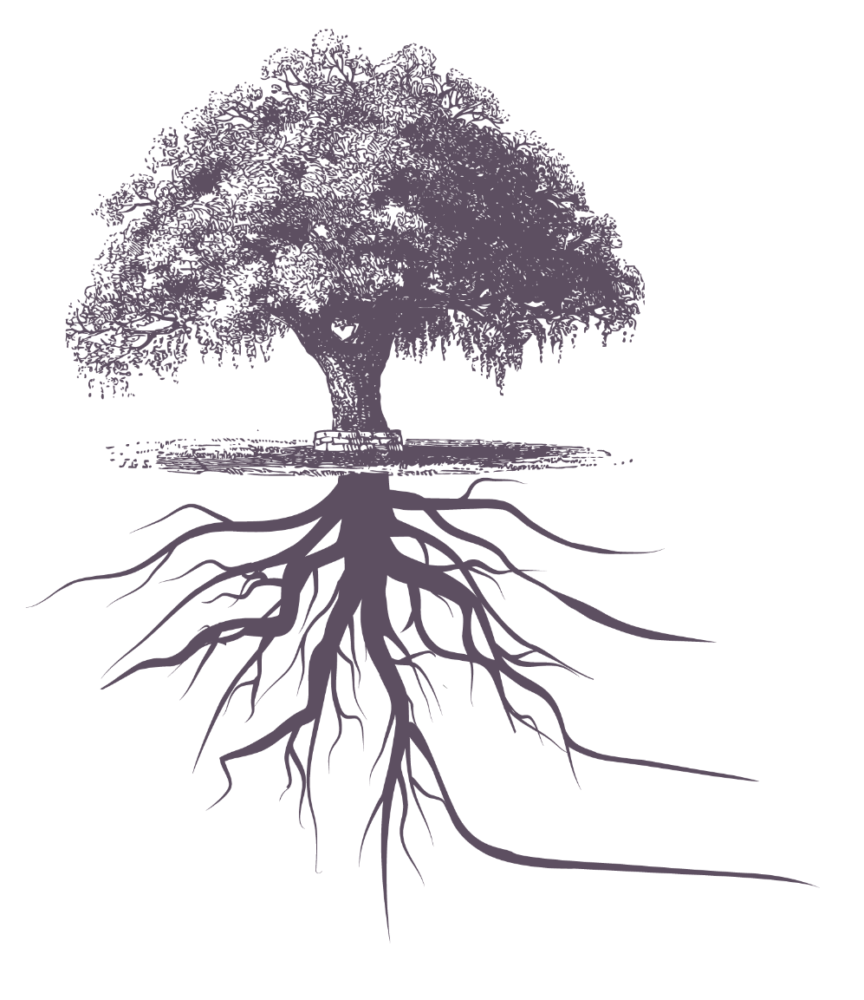


Stumbles and Learnings
Looking Beyond 2021
Gratitude
Introduction
How to use this field guide
Mobilize Problem Solving
STRATEGY 5

Sustain Efforts
over the Long Haul
over the Long Haul
STRATEGY 6
TABLE OF CONTENTS
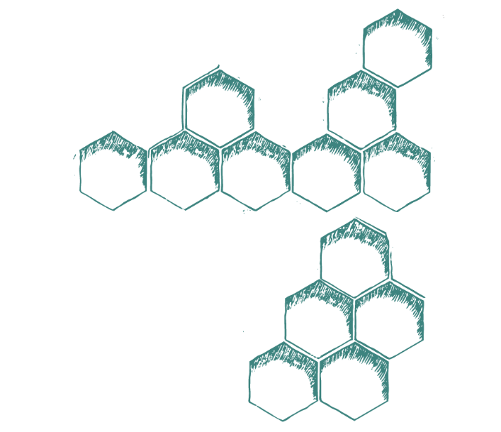
 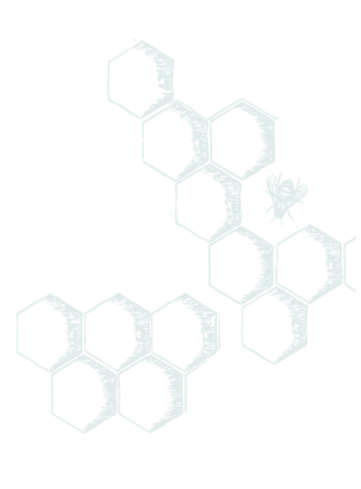
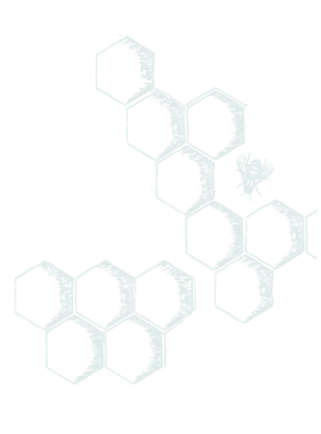

Media and Visibility
 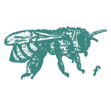
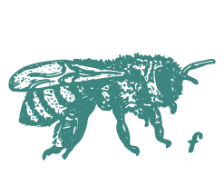
That knowledge is the key to moving beyond filling gaps in the system and instead address the root causes that produced those gaps in the first place.
At some point in the life of a network of shared purpose, it is essential to create a shared understanding of the challenge space. With that map, not only does everyone gain insights about their work, but it becomes easier to find allies, examples of whats worked (and what hasnt), and adjacent issues that must be addressed together and to pinpoint as a community the most strategic places to focus.
How We Implement:
Strategy:
Systems problems are too complex and interconnected to be solved by any single individual or organization, or even understood from any singular vantage point. Yet most of us take action on whatever piece of the challenge we can see, ignoring the equally important parts that others are experiencing. Is it any surprise, then, that our individual efforts, as strong as they are, rarely lead to the kind of change that lasts?
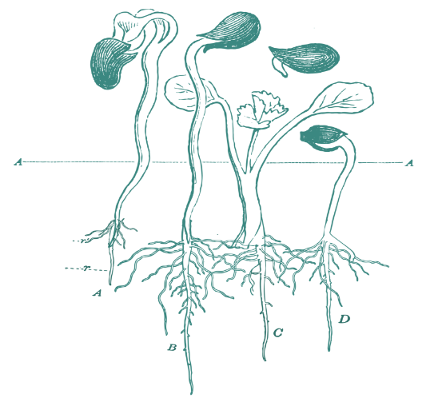


In 2015, Tom Peters, Executive Director of the South Carolina Coalition for Mathematics & Science (SCCMS), was working on developing a strategic plan for STEM education in South Carolina when he attended a STEMx conference and heard 100Kin10s Talia Milgrom-Elcott speak about the Grand Challenges in STEM. With a background in science and ecology, Peters was fascinated by the ecosystem approach to understanding STEM challenges, and before long, he and his colleagues adopted the Grand Challenge framework for their work in South Carolina.
Partnering with 100Kin10, SCCMS hosted an unconference that brought together leaders to examine state-wide STEM challenges from an ecosystem approach. With 100Kin10s support designing and facilitating the unconference, participants from across the state were able to recognize a common need to address the value and perception of STEM education in South Carolina and identify five key challenges to focus on. After the unconference, SCCMS was able to distill everything theyd learned in the South Carolina STEM Grand Challenges, which they shared publicly during STEM Education Day at the State Capitol.
Peters explained that through the Grand Challenge approach, SCCMS staked a claim about priorities that is more invitational, accessible, and actionable than a typical strategic plan, and the results are a clear indication this is true. The five challenges SCCMS and its partners identified have been adopted by the South Carolina Coordinating Council for Workforce Development, and the states STEM Education Day has evolved into STEM Education Month, including new grant programs and awards for teachers. SCCMS has also grown its partnership network, helped curate new STEM-focused frameworks for the SC Department of Commerce, and is developing and piloting a STEM Teacher Leader program to build capacity and increase teacher retention in rural communities in South Carolina.
Partnering with 100Kin10, SCCMS hosted an unconference that brought together leaders to examine state-wide STEM challenges from an ecosystem approach. With 100Kin10s support designing and facilitating the unconference, participants from across the state were able to recognize a common need to address the value and perception of STEM education in South Carolina and identify five key challenges to focus on. After the unconference, SCCMS was able to distill everything theyd learned in the South Carolina STEM Grand Challenges, which they shared publicly during STEM Education Day at the State Capitol.
Peters explained that through the Grand Challenge approach, SCCMS staked a claim about priorities that is more invitational, accessible, and actionable than a typical strategic plan, and the results are a clear indication this is true. The five challenges SCCMS and its partners identified have been adopted by the South Carolina Coordinating Council for Workforce Development, and the states STEM Education Day has evolved into STEM Education Month, including new grant programs and awards for teachers. SCCMS has also grown its partnership network, helped curate new STEM-focused frameworks for the SC Department of Commerce, and is developing and piloting a STEM Teacher Leader program to build capacity and increase teacher retention in rural communities in South Carolina.
Grand Challenges Adopted to Meet Local Needs
104,963
Pageviews in 2019 alone of our website that details all the grand challenges in STEM education
Pageviews in 2019 alone of our website that details all the grand challenges in STEM education
94%
of partners say that of partners say that addressing the Grand Challenges is an organizational priority and their work is currently contributing to addressing them.
of partners say that of partners say that addressing the Grand Challenges is an organizational priority and their work is currently contributing to addressing them.
The Grand Challenges offer a great framework to integrate meaningful research and best practices into this ongoing conversation, but to also build new knowledge and agency within school communities across one of the largest school systems in the US.
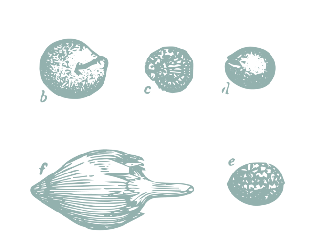
In Pennsylvania, we are focused on career readiness pathways to support our growing workforce demands, and STEM is a big part of that picture. Job trends, job growth, projections over the next decade, they all tell us that if we dont better align K-12 with high-quality STEM education, were not going to have the workforce ready for the jobs of the future. So the question is: how do we do that?
The Governor and Secretary of Education understand the importance of STEM and have been pushing to create a regional community of practice to find ways to work across the state on goals and projects together, a STEM ecosystem. The idea is creating a network of cross-sector partners, from libraries to government agencies to science museums, all with the goal of improving STEM education for students. This is not new, there are over 80 STEM ecosystems across the country, and similar to 100Kin10, the idea is about building a network of people engaged in this work to support
STEM education.
When we started our STEM ecosystem in Pennsylvania, we gathered at the Capital and identified that our most critical need is fostering the next generation of innovators and entrepreneurs, and the first step in order to think about how to do that is an asset map. We knew about the 100Kin10 Grand Challenges map, and we used that same framework for thinking through our challenges in Pennsylvania. Weve already built a working version of our very own map called the ENGINE Influencers Map. By identifying all the community organizations across Central Pennsylvania that are working on STEM issues, were gaining a deeper understanding of whats possible in our region by mapping the landscape and making that information available to everyone whos already doing this work. Not only did the Grand Challenges provide the inspiration for how we could think about mapping our assets, but it also provided a framework that were implementing at the regional level. This couldnt have happened without 100Kin10.
The Governor and Secretary of Education understand the importance of STEM and have been pushing to create a regional community of practice to find ways to work across the state on goals and projects together, a STEM ecosystem. The idea is creating a network of cross-sector partners, from libraries to government agencies to science museums, all with the goal of improving STEM education for students. This is not new, there are over 80 STEM ecosystems across the country, and similar to 100Kin10, the idea is about building a network of people engaged in this work to support
STEM education.
When we started our STEM ecosystem in Pennsylvania, we gathered at the Capital and identified that our most critical need is fostering the next generation of innovators and entrepreneurs, and the first step in order to think about how to do that is an asset map. We knew about the 100Kin10 Grand Challenges map, and we used that same framework for thinking through our challenges in Pennsylvania. Weve already built a working version of our very own map called the ENGINE Influencers Map. By identifying all the community organizations across Central Pennsylvania that are working on STEM issues, were gaining a deeper understanding of whats possible in our region by mapping the landscape and making that information available to everyone whos already doing this work. Not only did the Grand Challenges provide the inspiration for how we could think about mapping our assets, but it also provided a framework that were implementing at the regional level. This couldnt have happened without 100Kin10.

How We Implement:
The Strategy:


The Professional Development team at the California Science Center had been brainstorming
for a few months, trying to determine if they should incorporate math into their NGSS trainings.
Then they read 100Kin10s Doing the Math Report, which got them interested in learning more, so they participated in the Foundational Math Workshop. Through the conversations and activities that day, they found the reasons they were looking for that math was an important part of the broader challenges theyre working to address, and connected with new partners who could help them
take the next steps.
Soon after, they were able to connect with UCLAs Mathematics Project and find opportunities to train their Professional Development team in Cognitive Guided Instruction (CGI) Math. The California Science Center now has plans to incorporate CGI Math into both their summer trainings and their NGSS trainings. Elena Lopez, the Science Centers Professional Learning Manager, explained that the most valuable part of their participation in 100Kin10 has been the opportunity to connect with organizations that had knowledge and experience in exactly what they were looking for. Dont be afraid to pursue a collaboration. You really dont know what may come out of it.
for a few months, trying to determine if they should incorporate math into their NGSS trainings.
Then they read 100Kin10s Doing the Math Report, which got them interested in learning more, so they participated in the Foundational Math Workshop. Through the conversations and activities that day, they found the reasons they were looking for that math was an important part of the broader challenges theyre working to address, and connected with new partners who could help them
take the next steps.
Soon after, they were able to connect with UCLAs Mathematics Project and find opportunities to train their Professional Development team in Cognitive Guided Instruction (CGI) Math. The California Science Center now has plans to incorporate CGI Math into both their summer trainings and their NGSS trainings. Elena Lopez, the Science Centers Professional Learning Manager, explained that the most valuable part of their participation in 100Kin10 has been the opportunity to connect with organizations that had knowledge and experience in exactly what they were looking for. Dont be afraid to pursue a collaboration. You really dont know what may come out of it.
Through 100Kin10, staff from Chicago Public Schools (CPS), one of the largest school districts in the country, was able to connect with the University of Washington and learn about their Ambitious Science Teaching practices. Soon after, a 100Kin10 collaboration grant enabled Alissa Berg, the Science Manager for CPS, to travel to Seattle and observe firsthand some of the innovative phenomenon-based teaching strategies that were in practice there.
After returning, Berg shared these strategies with science teachers she was working with and helped form a professional learning community to support teachers in better understanding and implementing these strategies. As Berg reflected on the experience, she shared how broadly the impact has been felt. We now have schools where every science teacher is engaging their students in figuring out how and why puzzling phenomena occur. Its beyond exciting to see students connecting evidence from multiple sources/investigations to science ideas as they formulate in-depth explanations. The aha moments are plentiful and never get old!
After returning, Berg shared these strategies with science teachers she was working with and helped form a professional learning community to support teachers in better understanding and implementing these strategies. As Berg reflected on the experience, she shared how broadly the impact has been felt. We now have schools where every science teacher is engaging their students in figuring out how and why puzzling phenomena occur. Its beyond exciting to see students connecting evidence from multiple sources/investigations to science ideas as they formulate in-depth explanations. The aha moments are plentiful and never get old!

 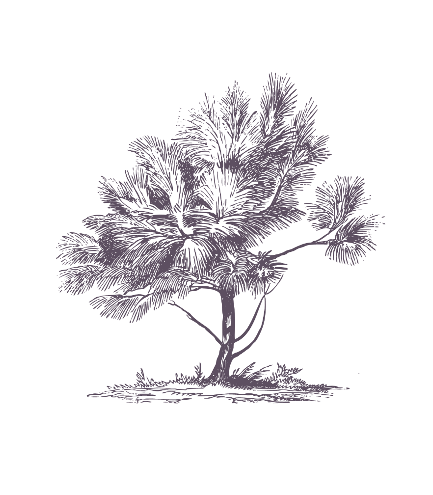
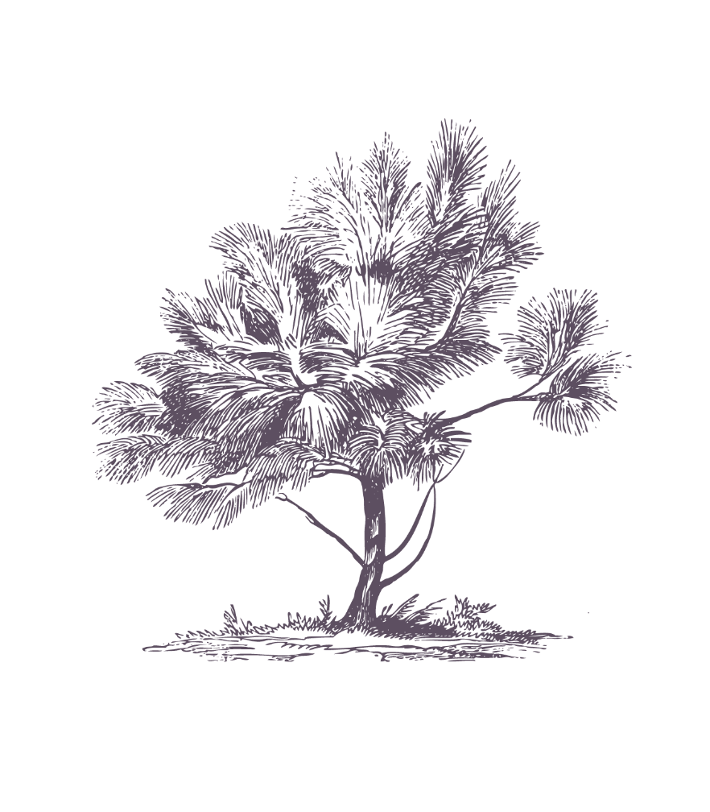
Summit is our inspirational national convening that connects partners from across the country and builds the trust they need to engage in knowledge sharing and plant the seeds for collaborative problem-solving.
237 attendees at Summit
representing 132 orgs
representing 132 orgs
Summit was incredibly inspirational, and allowed me to think about how networking with a group of STEM professionals can revolutionize teaching. I am eager to see what an even bigger difference I can make in STEM education on a regional, national, and global scale.
Collaboration grants are quick-turnaround grants that provide funding and support for organizations to meet in person to explore an idea.
15 collaboration grants were awarded to 33 organizations, enabling a total of 61 individuals to participate.
85% of grantees felt that collaboration grants were the highest impact 100Kin10 opportunity that they had participated in this year.
1-on-1 calls are personalized engagements for partners to speak directly to 100Kin10 staff, who help connect them to needed resources and other organizations working on similar challenges.
135 1-on-1 calls made to partners in 2019
At Summit, 97% of attendees
connected with new partners or allies
connected with new partners or allies
Through collaboration grants, 100% of attendees said they connected with new partners or allies
Through 1-on-1 calls 81% of participants said they connected with new partners or allies
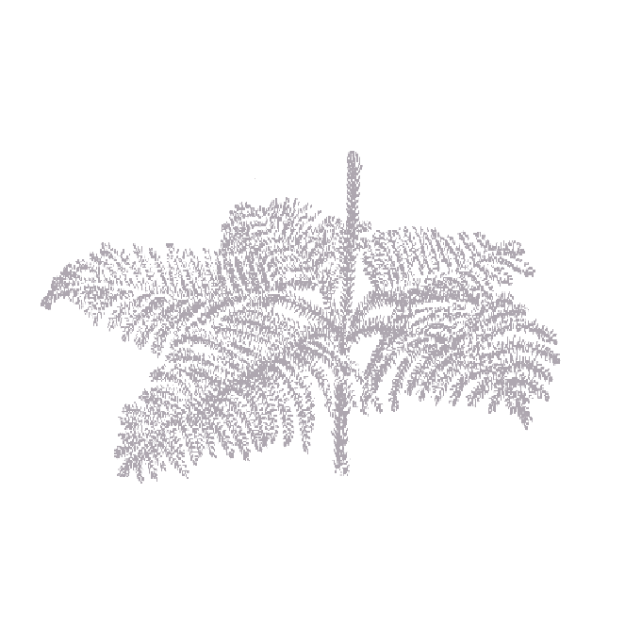
 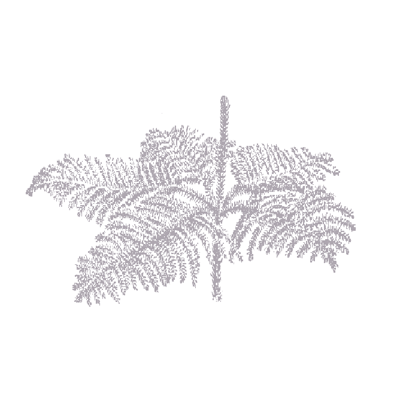
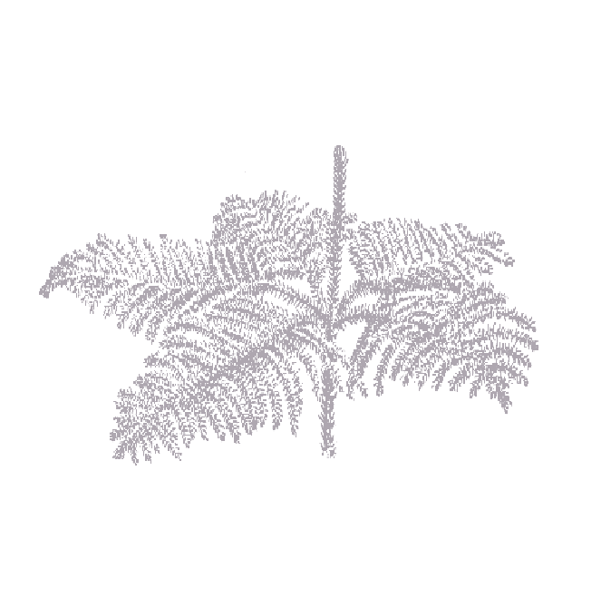

How We Implement:
The Strategy:
1.
2.
3.
1.
2.
3.
Avoid Recreating
the Wheel
the Wheel
STRATEGY 4
STRATEGY 3
Support People to Work Together

STRATEGY 2
Understand,
Identify and FIND Focus
Identify and FIND Focus
STRATEGY 1
Build a Coalition


30 to over 300

Weve grown from a network
of less than
of less than